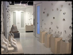
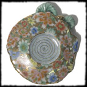
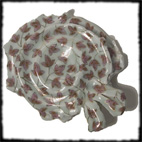

Borrowed Hands

Flower 1
Our ancestors molded and fired small clay figurines up to 15,000 years before they began to turn clay into cooking and storage vessels. Archaeologists attribute this long technological silence to more than a simple gap in the evidentiary record. The archeologists explain that new technology and new ideas require a social and economic context. Without the proper contextual push, our ancestors never thought to make a pot. When June Woest spent five weeks in Jingdezhen China in the summer of 2004, as an artist-in-residence, she found a thriving community practicing ancient traditions on the cusp of explosive economic development. It is this shifting context of technological gaps, fanciful ideas and practical purpose that we encounter in her hallway installation, "Borrowed Hands and Artificial Flowers," at the Houston Center for Contemporary Craft (21 December 2004 - 23 January 2005).
Corridors are transitional sites that give hierarchy and meaning to space, time, and experience. Woest has created a contemplative passageway lined with dozens of identical greenware hands perched in neat, orderly rows. Although cast from a mold, palms open and twice life-size, their sturdiness combined with the delicate patterns etched on some of the palms and fingertips makes them strangely singular. The fragile greenware has lost the plasticity of wet clay, but has not been subjected to the alchemical process that could transform it into a more durable form. This transitional material state and the receptive gestures suggest that these are adaptable hands, prepared to transform whatever they grasp.
Symbolic hand gestures and finger postures known as mudras are depicted in Buddhist sculpture and painting to evoke divine manifestations. But it's not just the divine Buddha who is capable of mudras. Every gesture performed by our mortal bodies is echoed in our environs. It is this life-pulse that has been captured by Woest. The steady vibrations of skilled movements, punctuated by capricious impulses, resonate in small mysterious objects that float on the walls along the corridor. Spiraling surface undulations reveal their traditional wheel-thrown origins, but their function is unsettled.
Perhaps the most intriguing of these objects are the "artificial flowers." They appear incomplete, but these are not broken shards. Their beauty is highlighted by gold luster, delicate colors and strategically placed decal blossoms, bamboo leaves and abstract geometric patterns fired into the clay. However, the precisely glazed and decorated surfaces belie their precarious bodies which appear as though their coils are beginning to unravel and sprout in supple, vibrant ways. A crusty engobe has begun to grow on some of the plumper forms. This displacement of earlier technical and aesthetic conventions suggests that these ceramic vessels are no longer primarily containers of space but of information. These "artificial flowers" are unpredictable hybrids. They are emblems of innovation.
Links
Dana Padgett
dpadgett@uh.edu
Houston Center for Contemporary Craft
4848 Main Street
Houston, TX
http://www.crafthouston.org
Flower 2

Flower 3